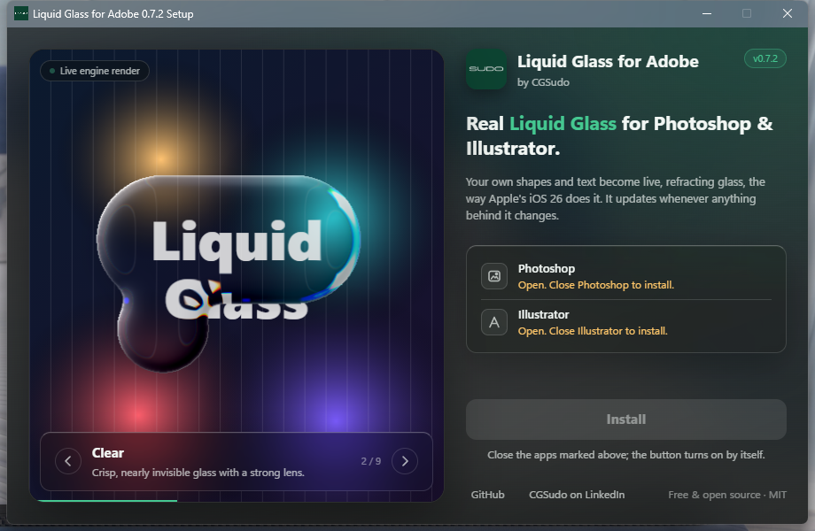

A free plugin that turns your own shapes and text into real, refracting glass in one click, like iOS 26 and macOS Tahoe. Live, non-destructive, and it updates whenever anything behind it changes.
Windows: one Setup.exe installs both apps · Mac: Photoshop plugin (.ccx) · MIT licence
Select shapes or text and click Make Glass (Photoshop), or apply Effect › Stylize › Liquid Glass (Illustrator).
The edge bends and magnifies what's behind it, with a rainbow fringe, rim lights and a bevel, like Apple's material.
Move the glass, edit the text or change the background: the glass re-renders by itself. Nothing is flattened.
Liquid Glass, Clear, Frosted, Glassmorphism, Ice, Smoked, Crystal, Bubble and Film frost. Save your own looks.
Shapes close to each other melt together with smooth liquid bridges.
WebAssembly in Photoshop, native in Illustrator. The same engine renders the looks in the installer.
| You want | File | Works on |
|---|---|---|
| Everything, one click | LiquidGlass-for-Adobe-…-Setup.exe | Windows 10 / 11 |
| Everything for Windows and Mac | …-AIO-Windows-Mac.zip | Windows + macOS |
| Photoshop only | LiquidGlass-for-Adobe-Photoshop-….ccx | Windows + macOS |
| Illustrator only | LiquidGlass-for-Adobe-Illustrator-…-Windows.zip | Windows |
| Source code | …-Photoshop-…-source.zip, …-Illustrator-…-source.zip |
All files are on the latest release. Tested on Windows; the Photoshop plugin should run on macOS but hasn't been tested on a Mac yet.

Any shape, path or text. It stays editable: the plugin never merges or flattens it.
The plugin reads the artwork under the shape without changing your document.
The shape becomes a curved glass surface; light refracts through it with dispersion, frost and rim highlights.
Move anything and the glass renders again, exactly like the demo above.
Install Liquid Glass for Adobe, select a shape or text layer and click Make Glass. Without a plugin you would blur a merged copy of the background and paint highlights by hand, a static fake that breaks when anything moves.
Select a shape, group or text and choose Effect › Stylize › Liquid Glass…. It is a live effect, so the shape stays editable.
Glassmorphism is frosted blur with a light border. Liquid Glass adds real refraction at the edge. The plugin does both: try the Glassmorphism and Frosted looks.
Free and open source (MIT). The Photoshop plugin runs on Windows and macOS; the Illustrator plug-in is Windows only for now.
No. Liquid Glass for Adobe is an independent project by CGSudo.